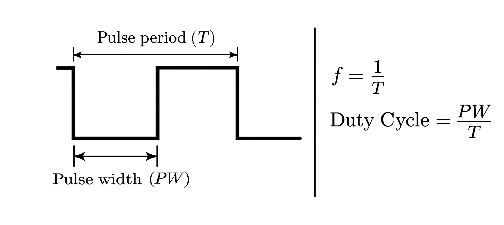

Provides pulse width modulation control over the electron beam.
| frequency | The frequency of the modulation in Hz. |
| duty_cycle | A fraction of one period in which a signal is active. Ranges between values larger than 0 but less than 1. |
| is_modulation_on | [Read only] True when pulse width modulation is running. |
| start_modulation() | Starts the beam modulation. |
| stop_modulation() | Aborts beam modulation. |
The beam modulator controls electron beam current by adjusting beam pulses generated by a high-speed NanoPulser blanker. The frequency and duty_cycle parameters can be set before starting the modulation or changed while the modulation is running.
Beam modulation is stopped and its parameters reset back to default even without explicitly calling stop_modulation() in 30s after script after script completion to ensure the system returns to its default state.
The frequency and duty cycle values may be set independently of each other, but they have to adhere to the following rules:

It is recommended that the modulation be stopped by calling stop_modulation() or by exiting the context manager before exiting the script.
The first example shows how beam_regulator_context can be used to reset the settings back to default after the acquisition:
beam_modulator = microscope.optics.blanker.beam_modulator
with beam_modulator_context(beam_modulator, duty_cycle=0.2, frequency=1e6):
image = microscope.acquisition.acquire_camera_image(CameraType.BM_CETA, 1024, 1)
The next example shows how the beam modulator parameters can be modified while beam modulation is active:
beam_modulator = microscope.optics.blanker.beam_modulator
# start modulation with the given duty cycle and frequency
with beam_modulator_context(beam_modulator, duty_cycle=0.2, frequency=1e6):
# Change the parameters while modulation is running
beam_modulator.frequency.value = 1.1e6
beam_modulator.duty_cycle = 0.7
The next example shows disabling the beam modulator explicitly without using the context manager:
# Start beam pulse width modulation with the given duty cycle and frequency
beam_modulator = microscope.optics.blanker.beam_modulator
beam_modulator.start_modulation(duty_cycle=0.2, frequency=1e6)
# Run acquisition with beam modulator enabled
iamge = microscope.acquisition.acquire_camera_image(CameraType.BM_CETA, 1024, 1)
# Stop beam pulse width modulation
beam_modulator.stop_modulation()
The next example shows how modulation parameters can be changed before starting the modulation:
beam_modulator = microscope.optics.blanker.beam_modulator
# Set the parameters before starting the modulation
beam_modulator.duty_cycle = 0.2
beam_modulator.frequency.value = 1e6
# Start beam pulse width modulation with the given duty cycle and frequency
beam_modulator.start_modulation()
print(beam_modulator.is_modulation_on) # True
# Stop modulation
beam_modulator.stop_modulation()
print(beam_modulator.is_modulation_on) # False